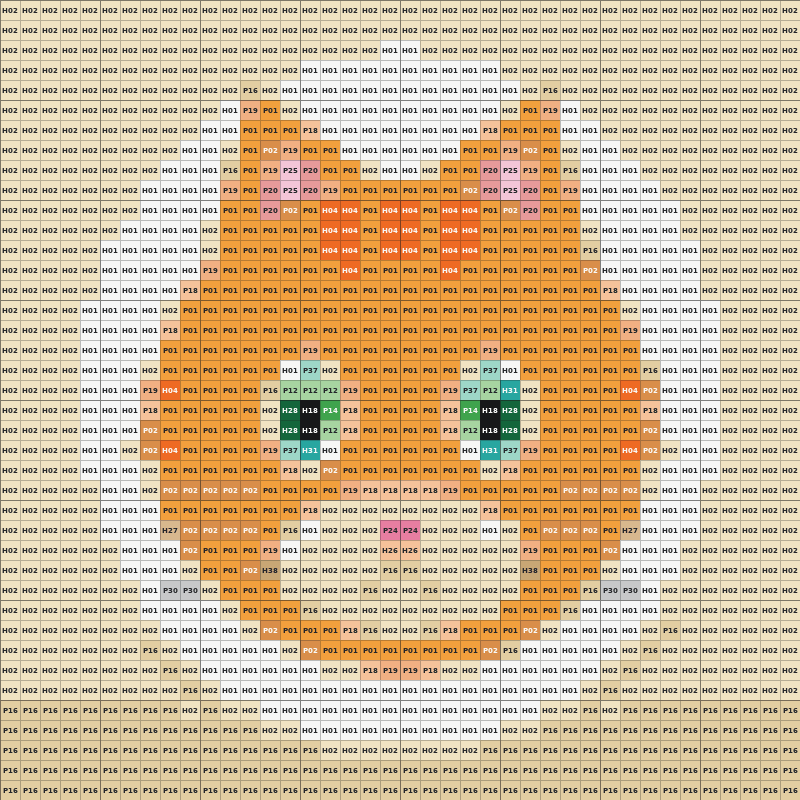

Votre photo, transformée en un motif de perles que vous pouvez vraiment réaliser
Faites glisser le curseur pour comparer. C’est un vrai motif créé par cet outil, pas une maquette — 40 × 40 perles · 21 couleurs · 1 600 perles, avec une liste d’achat exacte.

 Photo
Motif
Photo
Motif
- ✓ Aucune inscription
- ✓ 100 % dans votre navigateur — les photos ne sont jamais envoyées
- ✓ Gratuit pour commencer
1 Choisissez une photo
Déposez une image ici, ou touchez pour choisir
PNG, JPG ou WebP. Les images simples et contrastées donnent les meilleurs résultats.
Exemples — de vrais résultats de cet outil
Chaque motif ci-dessous a été produit par ce générateur à partir de l’image à côté. Ce que vous voyez est ce que vous obtenez : mêmes couleurs, mêmes codes, mêmes nombres.
Original💡 Portraits d’animaux et visages : utilisez 40 perles de large ou plus — les yeux, les moustaches et les nuances du pelage ont besoin de ce détail en plus.
 Original
Original Motif
Motif💡 Les paysages sont riches en détails. Les grandes formes — ciel, montagnes, eau — restent lisibles à 40 de large ; pour un rendu photo, allez plus large (Pro ou Studio).
 Original
Original Motif
Motif💡 Un sujet bien marqué sur fond uni est la réussite la plus facile — il reste net même aux petites largeurs.
 Original
Original Motif
Motif💡 Logos, icônes et dessins animés se convertissent proprement à presque toutes les tailles — les aplats de couleur et les contours marqués sont parfaits pour les perles.
Guide des tailles — ce qu’une largeur veut vraiment dire
La largeur que vous réglez est le nombre de perles en travers. Les perles midi standard font 5 mm chacune, donc la taille finie se calcule facilement avant de commencer :
| Largeur réglée | Taille finie* | Perles nécessaires† | Niveau de détail | Idéal pour |
|---|---|---|---|---|
| 20 perles | ≈ 10 cm (4″) | ≈ 400 | Massif — grandes formes seulement | Porte-clés, breloques, magnets |
| 29 perles | ≈ 14.5 cm (5.7″) | 841 | Net pour les motifs simples | Exactement une plaque standard — dessous de verre, objets de bureau |
| 48 perles | ≈ 24 cm (9.4″) | ≈ 2,300 | Bon — les portraits fonctionnent | Petites décorations murales, cadeaux encadrés (max. de l’offre gratuite) |
| 100 perles | ≈ 50 cm (20″) | ≈ 10,000 | Détail quasi photo | Grandes décorations murales (Pro) |
| 200 perles | ≈ 100 cm (39″) | ≈ 40,000 | Détail maximal | Pièces format poster (Studio) |
* Largeur en travers ; la hauteur suit les proportions de votre photo. † Pour un motif carré entièrement rempli — votre nombre exact figure dans la liste d’achat sous chaque motif que vous créez.
💡 Règle de base : plus le motif est petit, plus votre photo doit être marquée — un grand sujet et un fort contraste. Une photo chargée superbe à 100 perles de large deviendra de la bouillie à 20.
Guide pas à pas — de la photo à la pièce finie
Nouveau dans les perles à repasser ? Suivez ces cinq étapes et vous ne pouvez pas vous tromper.
1 Choisissez une bonne photo
Choisissez une image avec un sujet net, un fond uni et un fort contraste. Les visages, les animaux, les logos et les dessins animés donnent les meilleurs résultats. Les scènes chargées de petits détails se mélangent à la taille d’une perle — si votre photo est chargée, recadrez d’abord serré autour du sujet.

2 Réglez la largeur
La largeur est le nombre de perles en travers de votre pièce finie ; la hauteur suit automatiquement votre photo. Plus de perles = plus de détail, mais aussi plus de perles, plus de temps et plus de coût. À titre indicatif : porte-clés 20–30 perles de large ; un dessous de verre fait exactement une plaque à 29 ; objets de bureau 40–60 ; pièces murales 80 et plus. Voir le guide des tailles ci-dessus pour les tailles finies.

3 Lisez la grille
Chaque case est une perle. Le code imprimé dans chaque case (comme P01) est le code couleur de cette perle — le même code que dans la liste d’achat. Les lignes épaisses toutes les 5 perles vous permettent de compter de cinq en cinq au lieu d’une par une. Vous pouvez activer ou désactiver les lignes de grille et les codes au-dessus de votre motif.

4 Achetez les perles d’après la liste
Sous votre motif, vous trouverez la liste d’achat : chaque couleur avec son code, son nom et son nombre exact, le nombre total de perles, et le nombre de plaques standard 29 × 29 nécessaires. Achetez environ 10 % de plus de chaque couleur — quelques perles roulent toujours au loin.

5 Téléchargez, imprimez et réalisez
Téléchargez le motif en PNG et réalisez-le depuis votre écran, ou imprimez-le. À l’impression, choisissez 100 % / « Taille réelle » — « Ajuster à la page » rétrécit la grille et elle ne correspond plus à votre plaque. Avec l’offre Studio, les planches PDF divisent les grands motifs en une page par plaque, avec numéros de rangées et de colonnes sur chaque page.

🏁 Terminez : l’étape du repassage
Une fois toutes les perles placées, couvrez la pièce de papier sulfurisé (papier de repassage) et repassez à chaleur moyenne, en cercles lents, jusqu’à ce que le dessus des perles fonde et se soude. Laissez refroidir à plat — un livre lourd dessus l’empêche de se recourber. C’est tout le métier : placer, repasser, refroidir, terminé.
Ce que ça fait
Le générateur de motifs convertit n’importe quelle image en motif de perles à repasser prêt à réaliser — le même genre de grille que vous suivriez sur une plaque, générée en quelques secondes.
- Photo → motif, automatiquement. Importez une image et chaque pixel est associé à la couleur de perle la plus proche — aucun travail manuel pixel par pixel.
- Vraie palette de 64 couleurs de perles. Les couleurs viennent d’une palette Perler / Hama standard, chacune avec son code et son nom (comme H05 Rouge), associées par distance perceptuelle (Lab) pour que le résultat soit juste à l’œil, pas seulement proche en chiffres.
- Liste d’achat de perles. Vous obtenez un nombre exact pour chaque couleur — combien de perles de chaque code il vous faut — plus le nombre total de perles.
- Estimation des plaques. L’outil vous dit combien de plaques standard 29×29 la pièce finie demandera.
- Grille téléchargeable. Exportez le motif fini en PNG avec lignes de grille et codes couleur imprimés dans chaque case, prêt à réaliser.
- 100 % privé. Tout fonctionne en local dans votre navigateur. Votre photo n’est jamais envoyée sur un serveur.
- Trois offres. L’offre gratuite couvre les motifs jusqu’à 48 perles de large avec la palette de base et des exports filigranés. Pro et Studio relèvent la limite de largeur et débloquent la palette complète, les listes de perles CSV, les planches PDF imprimables et le mode lot — voir les tarifs ci-dessous pour le détail de chaque offre.
Comment ça marche
- 1Choisissez une photo
Déposez n’importe quel PNG, JPG ou WebP. Les images simples et contrastées donnent les meilleurs résultats. - 2Réglez la largeur
Choisissez la largeur de la pièce finie en perles — la hauteur suit automatiquement. - 3Recevez votre motif
Voyez la grille avec les codes couleur, vérifiez le nombre de perles par couleur, et téléchargez le PNG.
Tarifs
Commencez gratuitement. Passez à l’offre supérieure quand il vous faut de plus grands motifs, la palette de couleurs complète, ou des fichiers à imprimer pour réaliser.
Gratuit
$0
- Motifs jusqu’à 48 perles de large
- Palette de base de 64 couleurs (codes Perler / Hama)
- Nombre de perles dans la grille à l’écran
- Export PNG avec un petit filigrane
- Aucun compte, fonctionne pour toujours
Pro
$4.99/month
- Motifs jusqu’à 120 perles de large
- Palette complète de 100 couleurs (Perler + Hama + Artkal)
- Exports PNG haute résolution sans filigrane
- Liste de perles en CSV téléchargeable — liste d’achat imprimable
- Tout ce qu’il y a dans l’offre gratuite
Studio
$9.99/month
- Motifs jusqu’à 200 perles de large
- Planches PDF — paginées par plaque, avec coordonnées de rangées/colonnes pour l’impression
- Génération par lot — convertissez plusieurs photos d’un coup
- Licence commerciale pour les motifs que vous créez
- Tout ce qu’il y a dans Pro
Les clés sont stockées uniquement sur cet appareil et activent l’offre instantanément.
Questions fréquentes
Combien de perles et de plaques me faudra-t-il ?
La liste d’achat sous votre motif compte chaque couleur exactement, plus le nombre total de perles et le nombre de plaques standard 29 × 29 nécessaires. Par exemple, le motif du chat ci-dessus demande 1 600 perles en 21 couleurs et 4 plaques. Astuce : achetez environ 10 % de plus de chaque couleur — quelques perles roulent toujours au loin.
Ma photo est-elle envoyée sur un serveur ?
Non. Tout fonctionne en local dans votre navigateur — votre photo ne quitte jamais votre appareil, rien n’est stocké, et il n’y a aucun compte. Fermez l’onglet et tout disparaît.
Quelle est la différence entre Gratuit, Pro et Studio ?
Gratuit : motifs jusqu’à 48 perles de large, palette de base de 64 couleurs, et exports PNG avec un petit filigrane. Pro ($4.99/mois) : jusqu’à 120 de large, palette complète de 100 couleurs, exports sans filigrane et liste de perles CSV téléchargeable. Studio ($9.99/mois) : jusqu’à 200 de large, planches PDF imprimables, génération par lot et licence commerciale. Voir les tarifs ci-dessus pour la comparaison complète.
Pourquoi mon PNG téléchargé a-t-il un filigrane ?
Les exports de l’offre gratuite portent une petite bande « Made with Bead Pattern Maker » en bas, pour que les gens trouvent l’outil. Les exports Pro et Studio sont complètement propres.
Ma grille imprimée ne s’aligne pas avec ma plaque. Qu’est-ce qui cloche ?
Votre imprimante a mis la page à l’échelle. Réimprimez à 100 % / « Taille réelle » et désactivez « Ajuster à la page » — un carré imprimé doit égaler une perle. Ou réalisez simplement depuis l’écran, ou utilisez les planches PDF de Studio, paginées pour correspondre à une plaque par page avec numéros de rangées et de colonnes.
Puis-je l’utiliser sur mon téléphone ?
Oui — ça fonctionne dans tout navigateur mobile moderne, et vous pouvez l’installer comme une appli (cherchez « Ajouter à l’écran d’accueil ») ; ensuite, ça fonctionne même hors ligne. Vos photos restent sur votre téléphone, exactement comme sur un ordinateur.